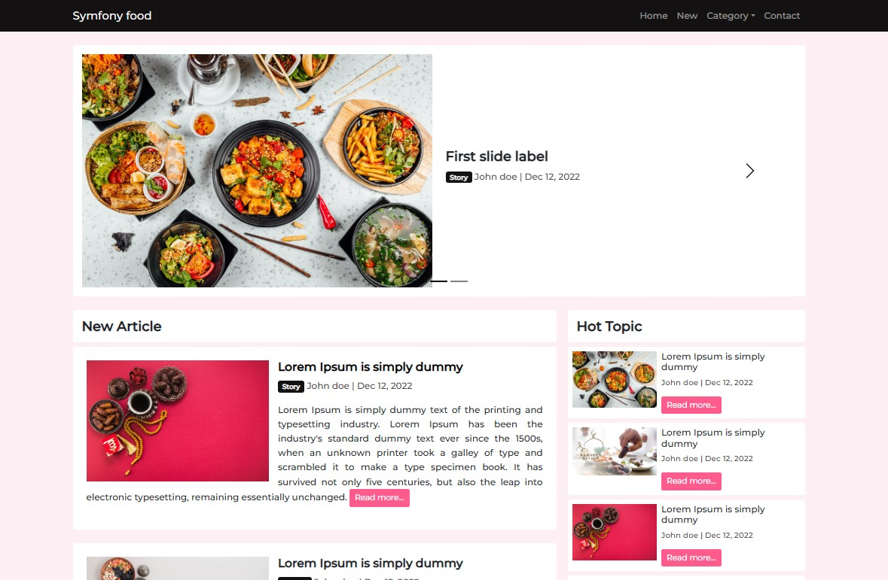
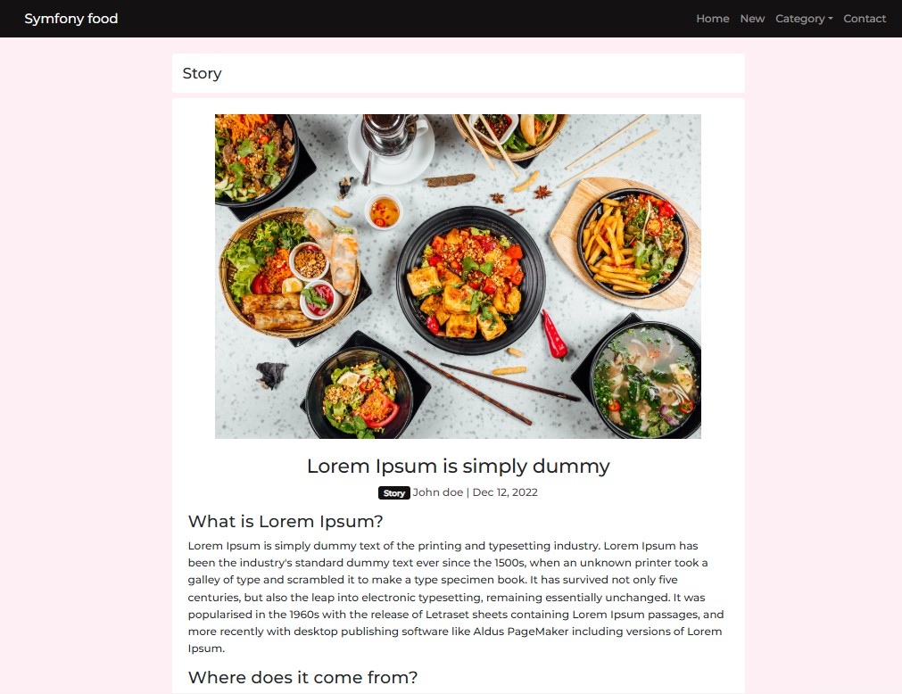

Visual Kuliner
Komposisi halaman dibuat untuk menonjolkan produk makanan, menu unggulan, dan karakter brand kuliner.
Symfoni Food adalah template website kuliner dengan tampilan bersih, ringan, dan responsif. Cocok untuk restoran, kafe, produk makanan, layanan katering, atau landing page bisnis kuliner yang ingin tampil hangat dan profesional.

Komposisi halaman dibuat untuk menonjolkan produk makanan, menu unggulan, dan karakter brand kuliner.
Cocok untuk promosi restoran, kafe, katering, UMKM makanan, dan campaign produk kuliner.
Layout tetap nyaman dibuka di desktop, tablet, dan mobile untuk pengalaman pengguna yang konsisten.
Tampilan utama dari template Symfoni Food.
